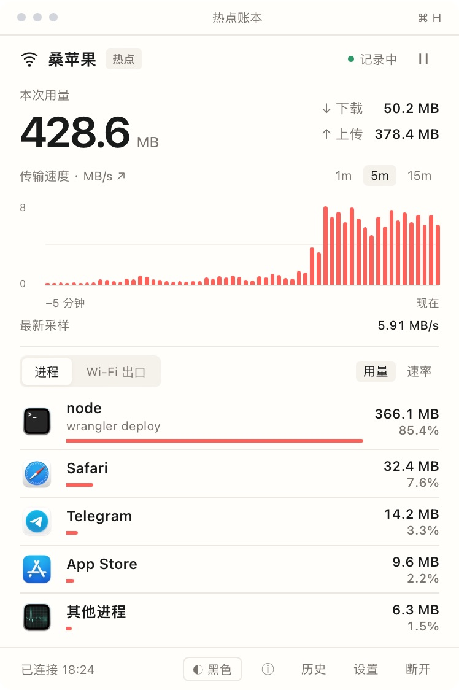

找出消耗来源
累计用量、密集速度柱形图和应用排行。区分进程活动与 Wi-Fi 出口，查看代理转发。
刚连上热点，流量就少了一大截？
在一个小窗口里，查看用量、找到应用，及时发现意外传输。
早期版本，尚未通过 Apple 公证。首次打开可能被系统拦截，安装说明见下方。Intel Mac 暂不提供预编译包。

累计用量、密集速度柱形图和应用排行。区分进程活动与 Wi-Fi 出口，查看代理转发。
累计与短时用量提醒，手动关闭 Wi-Fi。可选达到阈值后自动断开，默认关闭。
同名热点、同一网卡下重启，续接累计记录与应用排行。退出期间流量不补计。
下载 ZIP，解压后将“热点账本.app”拖到“应用程序”。连接热点后，点击“记录此 Wi-Fi”；以后连接已标记的热点会自动记录。关闭窗口仍继续采样，完全退出则停止。
本版采用本地签名，未通过 Apple 公证。如果 macOS 阻止打开，请先核对下载来源与 Release 提供的 SHA-256。确认信任后，可在系统设置“隐私与安全性”中使用“仍要打开”（若系统提供）。也可以从 GitHub 获取源码，在本机构建。
不完全一致。总量来自 Mac 无线网卡，包含局域网传输与协议开销；进程约每 2 秒采样，可能漏掉短连接。此工具用于定位来源，不是运营商账单。
“进程”记录各进程收发活动，同一份数据可能同时出现在 ChatGPT 和 Clash 中；代理数字包含转发，并非它自身独立消耗。“Wi-Fi 出口”可能把外部传输记到代理名下。排行百分比以该列表的合计为分母，不是手机流量占比。本版尚未实现代理去重后的原始应用分账。
断连会关闭 Mac 的 Wi-Fi，影响所有使用无线网络的应用；以太网不受影响。可在首页重新开启。自动断连按采样周期检查，可能超过阈值，并非严格流量上限。
应用把记录保存在本机，不上传流量记录，不采集网络内容。可从设置打开数据目录。此产品介绍页使用 Umami 统计页面访问；Mac 应用不包含该统计脚本。